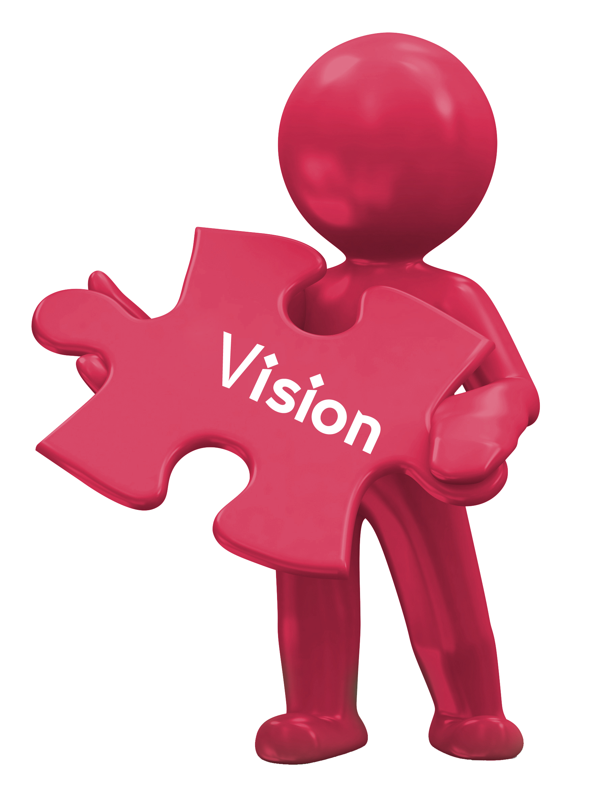
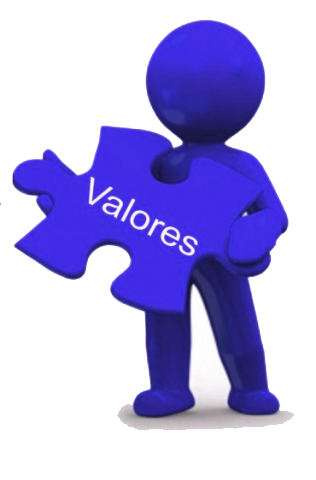

Healthy Living
Sobre Nosotros
Mision
Elevar continuamente el nivel de experiencia de las personas mediante el uso de internet y tecnologia para ayudarse entre si a encontrar, descubrir y aprender habitos saludables. Liderar el compartir nuestra forma de alimentarnos. Comprometidos en ayudar a alimentarse con alimentos saludables y de calidad que satisfagan a los consumidores. Crear valor a través del trabajo en equipo y el desarrollo de las personas.

Vision
Promover el intercambio de información y buenas prácticas. Fortalecer la capacitación en educación nutricional.
Contruir otra forma de relacionarse con los alimentos. Ofrecer alimentos saludables y de calidad que satisfagan a los consumidores.
Incentivar el hábito de consumo de comida natural, dejar de lado los procesados.
El objetivo del programa es promover el consumo de verduras y frutas
a nivel internacional en cinco o más porciones por día, a fin de contribuir a prevenir la incidencia de cáncer y otras enfermedades crónicas asociadas
con la alimentación. Nos orientamos en generar valor a todas las partes interesadas.
